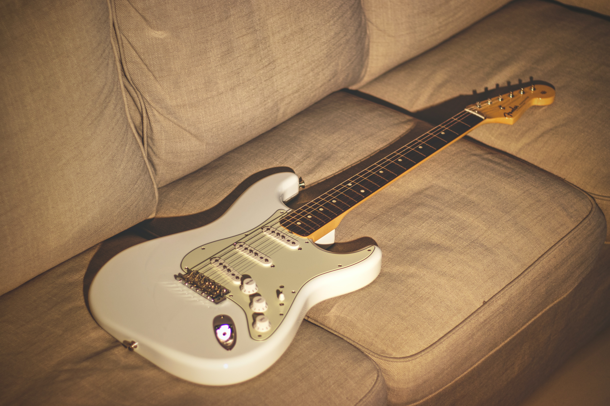
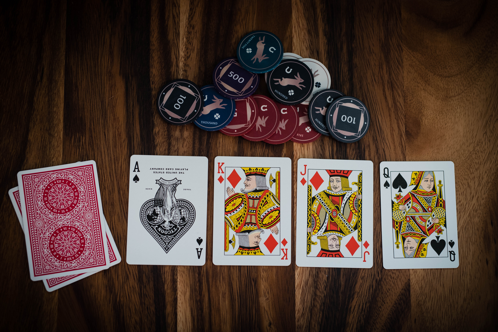

Intro

This webpage is for learning purposes. I modified some online resources/templates to create this
webpage and to showcase basic understanding towards web development.
The Anatomy of a Website: HTML, CSS & JavaScript
To explain it in simple terms, a webpage is like a house -
HTML is the structure/blueprint, CSS is the interior/decoration, JavaScript is the
electricals that powers the house.
Back in college, I took few courses on web development and learned the rest through online resources
- FreeCodeCamp, CodeAcademy, w3schools, MDN web docs, etc.
When I first got into coding, Java is the first language I learned. (Technically C is the first
language I encountered but I found it boring+difficult so I chose Java instead)
Although the OOP concepts in Java are quite cofusing at first, but I enjoyed learning it.
I also learned the basics of SQL and bought different books on "How to build an Android App". I
followed the instructions on building Android Applications, and tried to enhance my learning through
small projects.
Furthermore, I took an free online course on Firebase and used the RealTime Database on one of the
Mobile Application projects in school.
My focus was primarily on Mobile Applications but I decided to learn Web Development in my free time
as a challenge and to also create more career options.
Recently I've been quite obsessed with blockchain technology, which I believe will be the new
web 3.0 era. I'm interested in developing the Ethereum Blockchain, and it mainly requires two
languages - Solidity & JavaScript, this is also part of the reason why I started learning Web
Development.
Education
2014-2016 I-Shou International School (Taiwan)
2016-2018 University of British Columbia (Canada)
2018-2021 University of New South Wales (Australia)
Personal Life
Fun Facts About Me:
- I was born and raised in Taiwan, but I also spend 1/3 of my life in other countries (USA,
Canada, Australia)
- I transferred more than 10 schools over 22 years
- Into Finance and Software Development
- I would like to build and run a startup in the future
- Cooked my own meal when I was 9
- Read more than 100 books about Investment & Management
I have a lot of hobbies and these are the things I love.
A picture is worth a thousand words

This is Taipei, the capital city of Taiwan. Although I was born in Kaohsiung but I also lived in
Taipei for several years. This is a picture of Taipei 101 - the tallest building in Taiwan.

It sounds weird, but one of my hobbies back in high school was to visit houses on weekends. Due to
family business, I have lots of opportunities to see different houses and I'm obsessed with the
interior design. Although it never occured to me to choose interior designer as a career, but I
always look closely what furniture they pick and what kind of material they choose. It can't earn me
any money, but I guess I can design my own house and make it look better.

During the 2020 pandemic, I learned how to play Texas Poker. Since then, Texas Poker become one of my
favorite hobbies and I try to participate different tournaments in my spare time. Some people see it
as gamble, but I think the opposite, it actually requires way more skills/strategies than luck.
Additionally, the strategies in poker change the way I look at things in a certain degree and also
enlightens me to see things clear.
Life is just a big game of Texas hold'em, unexpected things may arise that may suite you or
destroy you. You gotta make the best of the cards your dealt, adjust accordingly, and always
understand that you control your decisions.

I love watching NBA and I played a lot of basketball tournaments throughout high school and college.
Spurs used to be my favorite team when Tim Duncan was still playing. Now Lebron James is my favorite
NBA Star of all time.

I spend a lot of time alone when I was little. Besides playing video games, reading books became one
of my favorite things to do at home. I find financial books interesting for some reason. Although I
couldn't really apply them in real life, but I enjoy learning differenct concepts of management and
business strategies. Some books are such a page-turner, the case studies in the book are more
twisted and intriguing than a fiction to me.
Contact